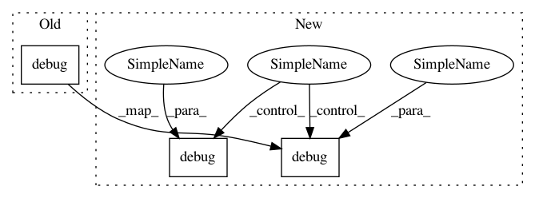

a6ead9918681c1caa4e2a892a16b7c8bd4edfbe6,w3af/core/controllers/sql_tools/blind_sqli_response_diff.py,BlindSqliResponseDiff,_find_bsql,#BlindSqliResponseDiff#,167
Before Change
severity.HIGH, response_ids, "blind_sqli",
mutant)
om.out.debug(v.get_desc())
v["type"] = statement_type
v["true_html"] = second_true_response.get_body()
v["false_html"] = second_false_response.get_body()
After Change
severity.HIGH, response_ids, "blind_sqli",
mutant)
om.out.debug(v.get_desc())
self.debug(v.get_desc(),
statement_type=statement_type,
mutant=mutant,
response_1=false_response,
response_2=second_false_response)
v["type"] = statement_type
v["true_html"] = second_true_response.get_body()
v["false_html"] = second_false_response.get_body()
In pattern: SUPERPATTERN
Frequency: 3
Non-data size: 3
Instances
Project Name: andresriancho/w3af
Commit Name: a6ead9918681c1caa4e2a892a16b7c8bd4edfbe6
Time: 2018-05-28
Author: andres.riancho@gmail.com
File Name: w3af/core/controllers/sql_tools/blind_sqli_response_diff.py
Class Name: BlindSqliResponseDiff
Method Name: _find_bsql
Project Name: andresriancho/w3af
Commit Name: dc942a260ea91ed9c57e510aac80af0ce05ce4dd
Time: 2017-03-27
Author: andres.riancho@gmail.com
File Name: w3af/core/controllers/sql_tools/blind_sqli_response_diff.py
Class Name: BlindSqliResponseDiff
Method Name: _find_bsql
Project Name: andresriancho/w3af
Commit Name: d1db9eb1e8c5b5626708fc19af124fee7ba30fa0
Time: 2018-01-11
Author: andres.riancho@gmail.com
File Name: w3af/core/data/url/handlers/keepalive/connection_manager.py
Class Name: ConnectionManager
Method Name: get_available_connection